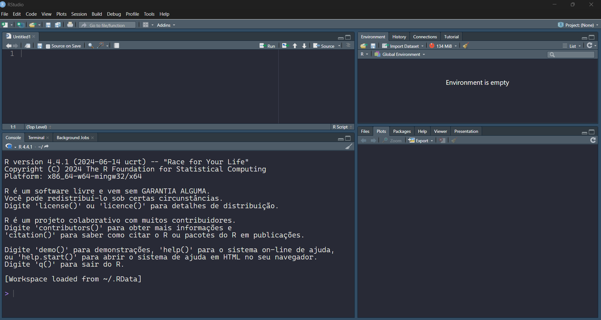

O que é R?
R é uma linguagem de programação de alto nível, orientada a objetos, voltada para a manipulação e análise de dados, além da visualização gráfica. Seu ecossistema permite tanto a implementação de técnicas estatísticas próprias quanto o uso de métodos já disponíveis em diversos pacotes desenvolvidos pela comunidade.
Como obter o R?
Siga os passos abaixo para baixar e instalar o R e o RStudio:

IDE: RSTUDIO - sobre a IDE
-
Editor de Script (canto superior esquerdo)
Onde o código em R é escrito e salvo em arquivos.R. Permite organizar, comentar e executar trechos de código. -
Console (canto inferior esquerdo)
Funciona como linha de comando do R. Mostra a saída dos comandos executados e também aceita comandos digitados diretamente. -
Environment / History (canto superior direito)
- Environment: lista os objetos criados (variáveis, vetores, matrizes, data frames, funções etc.).
- History: guarda o histórico dos comandos já executados.
Mais sobre o RSTUDIO
-
Files
mostra os arquivos da pasta de trabalho -
Plots
Funciona como linha de comando do R. Mostra a saída dos comandos executados e também aceita comandos digitados diretamente. -
Packages
- gerencia pacotes instalados e carregados.
-
Help
fornece documentação e exemplos de funções/pacotes